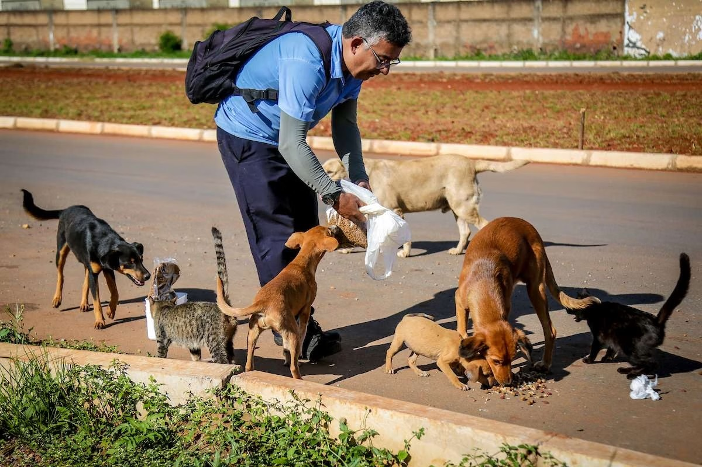

Quem somos
Somos uma organização sem fins lucrativos que atua com animais abandonados.
Nossa missão é resgatar, cuidar e promover a adoção responsável para esses animais.
Junte-se a nós nessa causa nobre!
Missão da ONG Tio Patinhas
Resgatar, proteger e cuidar de animais abandonados, promovendo seu bem-estar, incentivando a adoção responsável e conscientizando a sociedade sobre a importância do respeito e da proteção aos animais.

Contato ONG Tio Patinhas
Endereço: Rua Simão Alves, 54, Centro, Afogados da Ingazeira - PE
Telefone: (87) 9 9158-4710
Email: contato@ongtiopatinhas.org.br